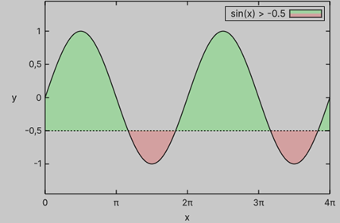
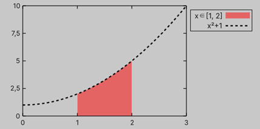
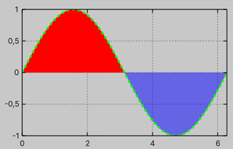

Plot with filled baseline
Data
To plot the filled area between a curve and a baseline, use PlotWithFilledBaseline.
Similar to PlotWithLines, the provided data must implement IReadOnlyList<float2>.
You can optionally specify the baseline value y0 (by default 0f) to control the baseline.
You can also specify the area to fill using FillBaseline.
By default, both the areas above and below the baseline are filled.
const float pi = math.PI;
var graph = new Graph
{
XAxis = { Label = "x", Min = 0, Max = 4 * pi, Tics = Tics.Manual(new Tic[]
{
(0, "0"), (pi, "π"), (2 * pi, "2π"), (3 * pi, "3π"), (4 * pi, "4π"),
}) },
YAxis = { Label = "y", Min = -1.45f, Max = 1.45f },
style = { height = 300 },
Theme =
{
Key = { Position = KeyPosition.InTopRight },
Grid = { Display = DisplayStyle.None }
}
};
var fx = Sequence.Uniform(x => math.sin(x), samples: 200);
var y0 = -0.5f;
graph.PlotWithLines(Sequence.Uniform(x => y0)).SetStyle(0);
graph.PlotWithFilledBaseline(fx, y0,
title: "sin(x) > -0.5", theme: new()
{
LineColor = Color.black,
FillAboveColor = Utils.ColorWithAlpha(Color.green, 0.2f),
FillBelowColor = Utils.ColorWithAlpha(Color.red, 0.2f)
}
);
The C# example above produces the following plot:

Note
You can control the fill color for each section (above and below the baseline) using FillAboveColor and FillBelowColor or set the same color for both sections by providing FillColor.
NaN values
Similarly, one can use float.NaN to separate input data, as shown in the following example:
var graph = new Graph
{
XAxis = { Min = 0, Max = 3 },
YAxis = { Min = 0 },
Theme =
{
Key = { Position = KeyPosition.OutRightTop },
Grid = { Display = DisplayStyle.None }
}
};
graph.PlotWithFilledBaseline(Sequence.Uniform(x => x > 1 && x < 2 ?
x * x + 1 : float.NaN, samples: 300
), title: "x∈[1, 2]", theme: new() { LineWidth = 0 });
graph.PlotWithLines(Sequence.Uniform(x => x * x + 1), title: "x²+1", theme: new()
{
LineWidth = 2,
LineDashPattern = new float[] { 4, 4 },
LineColor = Color.black,
});

Style
